Themes · Concept
Classic
One-bit windows on a dithered desktop. Classic is a concept theme with its own world, typography and desktop decoration, one of 30 in WidgetThemes, the free desktop widget app for Mac, Windows and Linux.
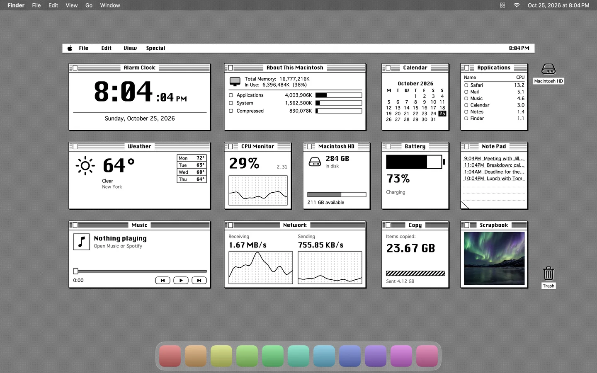
Every widget, drawn for Classic
Each widget is drawn from scratch in this theme's style. Add them one at a time, or apply the whole Classic layout with its wallpaper in one click.
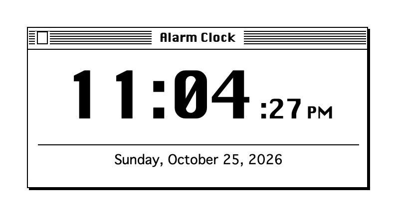
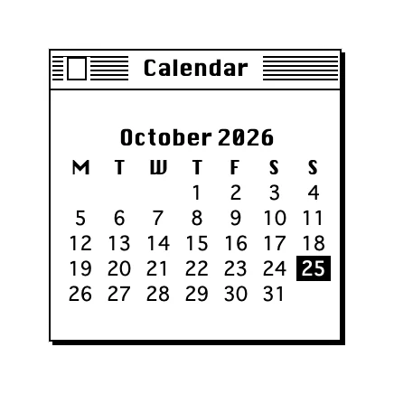
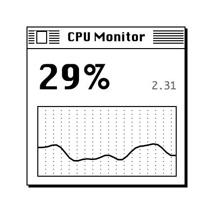
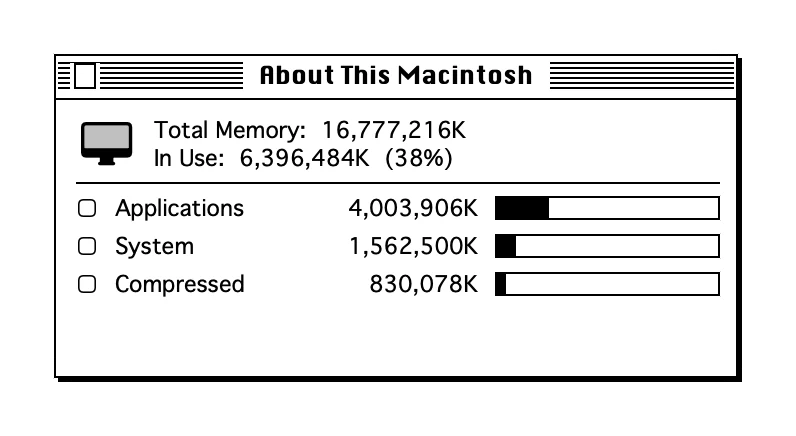
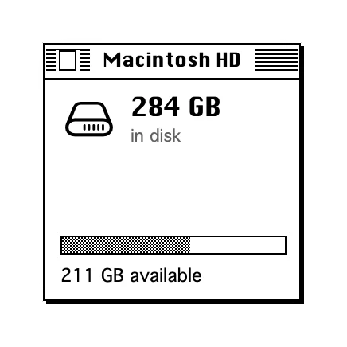
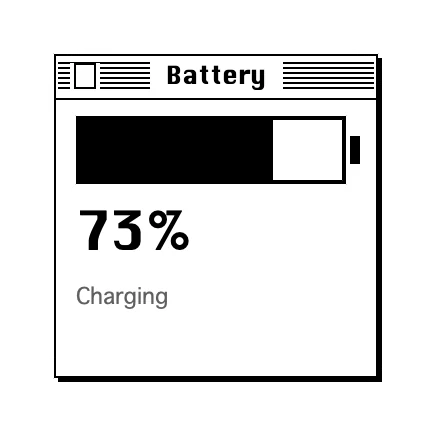
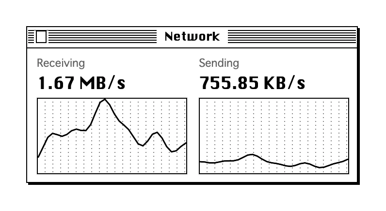
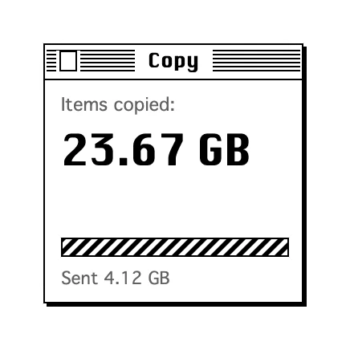
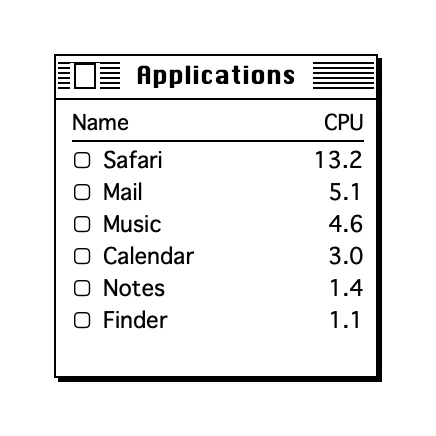
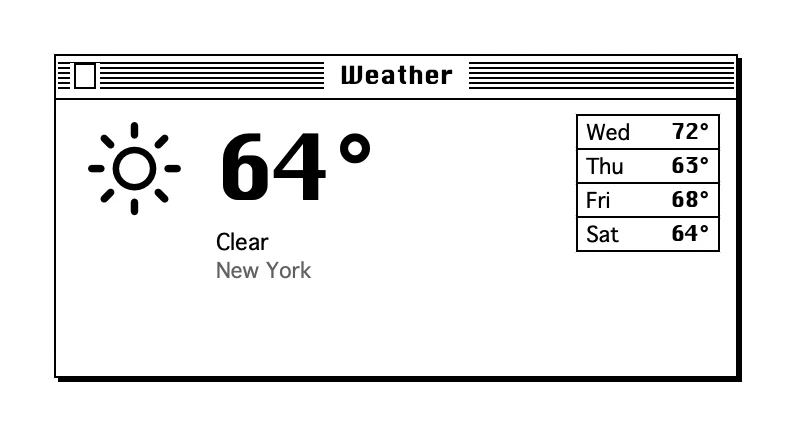
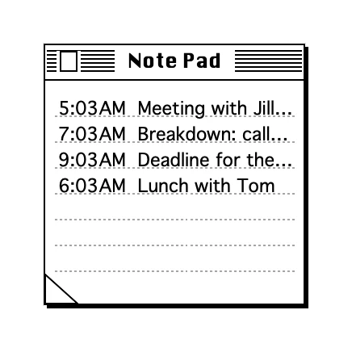
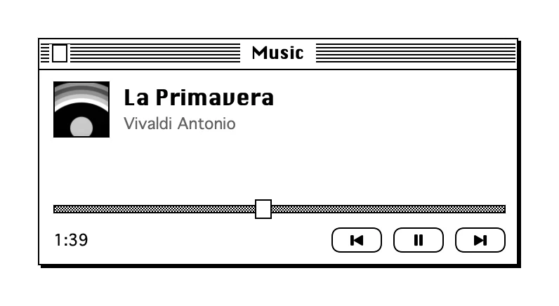
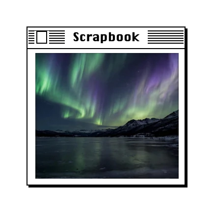
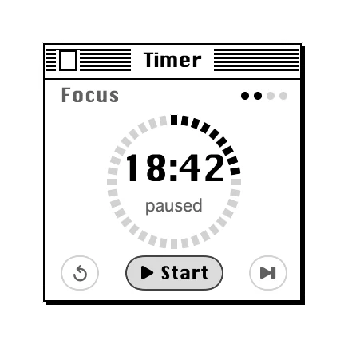
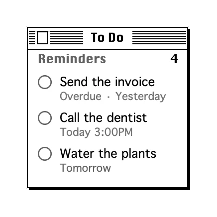
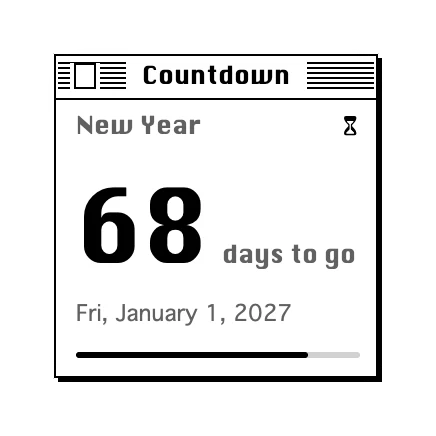
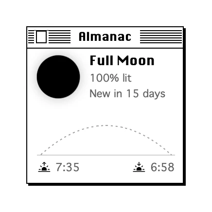
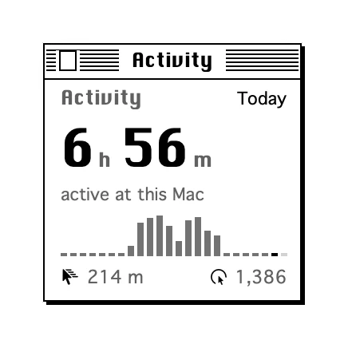
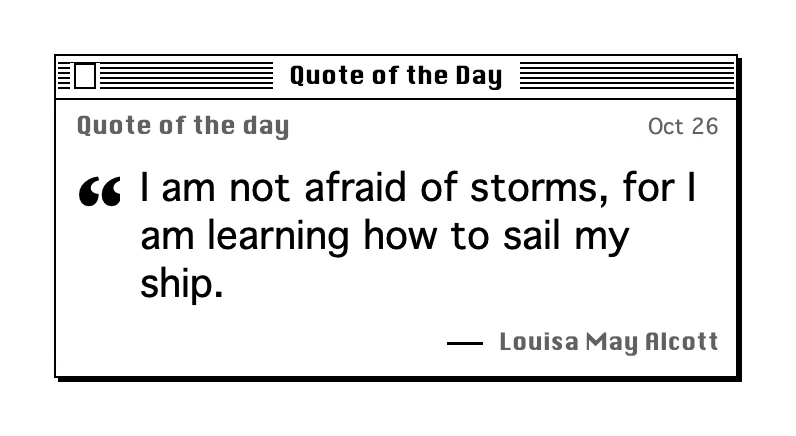
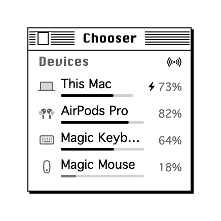